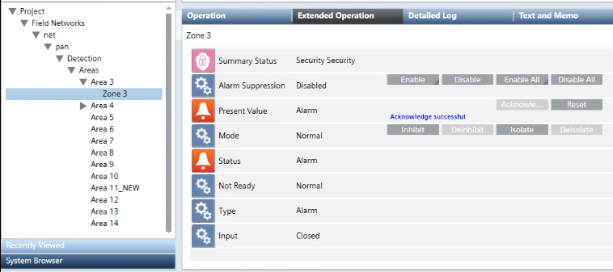

Acknowledge or Reset an SPC Zone
You can issue commands to acknowledge or reset active events on an intrusion zone.
- Select Project > Field Networks > [SPC Network] > [SPC panel] > […] > [area] > [zone].
- In the Operation or Extended Operation tab, next to the Present Value property, click on the required command:
- Acknowledge. Available when there is an active event on the zone that requires ack to silence the SPC central buzzer.
- Reset. Available after the event is acknowledged.
